Cosmediate: аудит і редизайн маркетплейсу
Дизайн трьох ролей продукту до редизайну був зроблений так, наче це взагалі різні продукти. Я звів їх в одну дизайн систему.
Cosmediate це нідерландська платформа, що з'єднує пацієнтів із сертифікованими косметологічними клініками.
Client, Clinic і Admin були збудовані окремо: спільний домен, але жодної спільної дизайн-системи. Бриф був широкий: перебудувати все так, щоб досвід лишався консистентним, а кожна роль отримала рівно те, що їй потрібно.
3 ролі повний редизайн дизайн-система з нуля Figma
Скоротив запис із 8 кроків до 5. Людина бронює швидше й не губиться дорогою.
Виніс сертифікати, лікарів і відгуки наперед, ще до кнопки запису.
Зробив три продукти в одній логіці й стилі: для клієнтів, клінік і адміністраторів.

Дизайн система на три ролі
Компоненти, що які є в дашборді клініки, мают бути констистетні з booking-флоу пацієнта.
До екранів я змапив інформаційну архітектуру кожної ролі, а потім як вони пов'язані разом .
Як доступність клініки з'являється у booking-флоу пацієнта, як дії адміна впливають на те, що бачать клієнти і клініки. Дизайн-система будувалась саме під це: семантичні токени замість сирих значень і кожен компонент з усіма станами, бо клініки живуть у крайніх випадках, тобто зайняті слоти, очікування погоджень і протерміновані сертифікати.
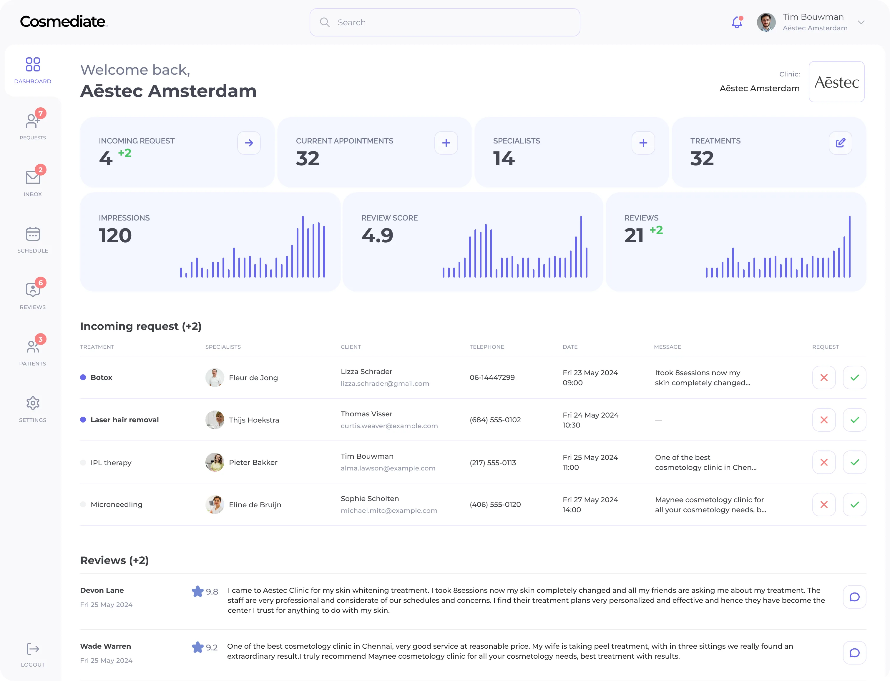
Booking-флоу
Запис до косметологічної клініки це не бронь столика: тут бракує довіри, а не слотів.
Я спроєктував флоу як лінійний покроковий процес, де кожен крок відповідає на одне питання: клініка, процедура, слот, дані, підтвердження.
Тут є шар консультації й вимоги до сертифікації, які типові booking-інтерфейси не закривають. Профіль клініки будує довіру ще до бронювання: сертифікати, фото до і після, профілі лікарів і верифіковані відгуки стоять вище кнопки запису.
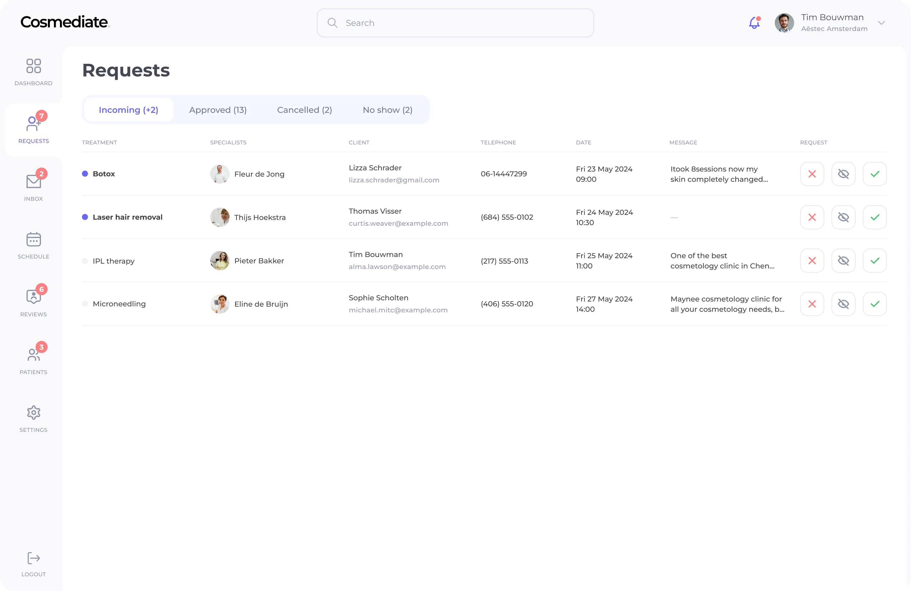
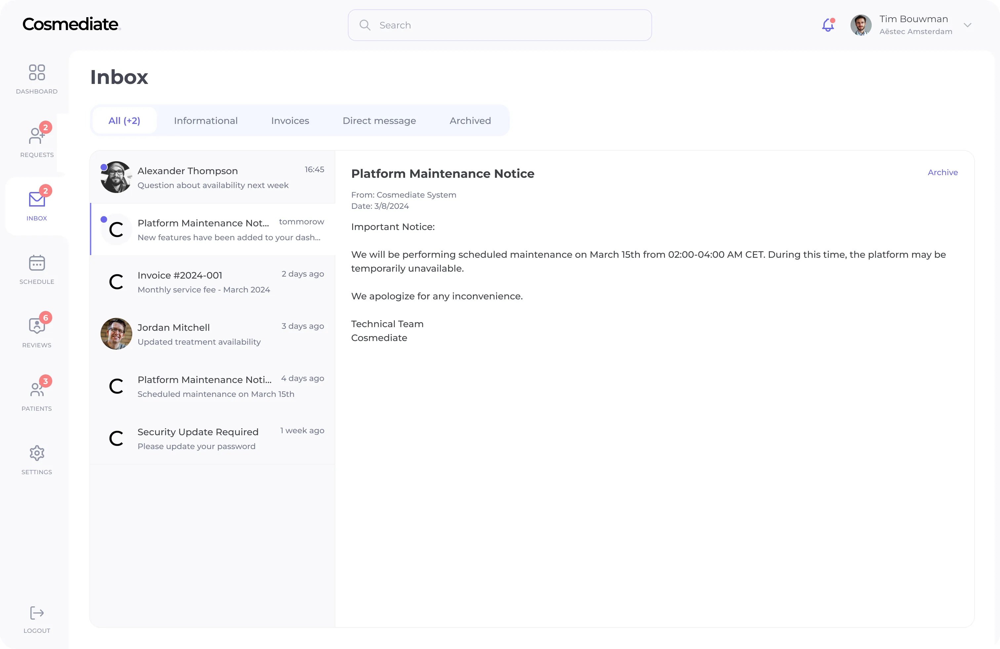
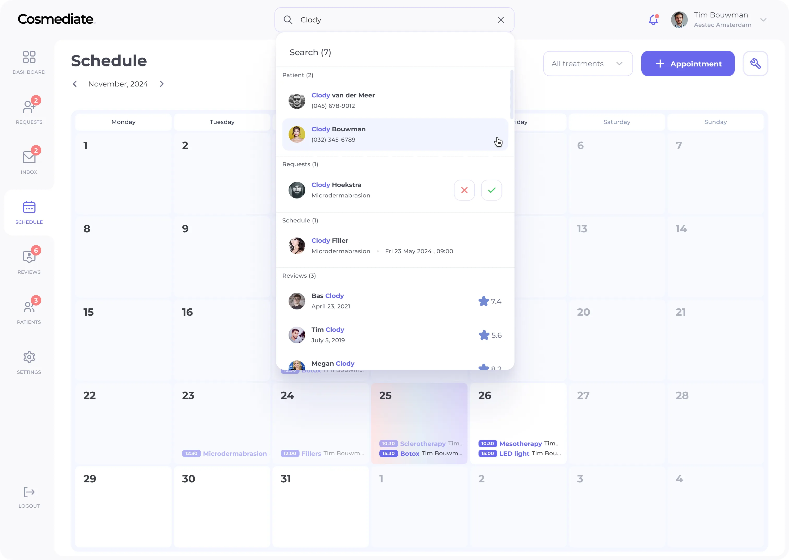
Clinic
Клініка не мусить cтраждати від перегруженого інтерфейсу, бізнес має працювати без перешкод.
Я структурував інтерфейс навколо трьох самодостатніх зон: Календар, Профіль, Налаштування.
Клініка з кількома лікарями, типами процедур і великим потоком бронювань має бачити стан кожного запису одразу. Управління бронюваннями побудоване на статусах pending, confirmed, completed і cancelled, кожен зі своїм візуальним рішенням і чітким набором дій.
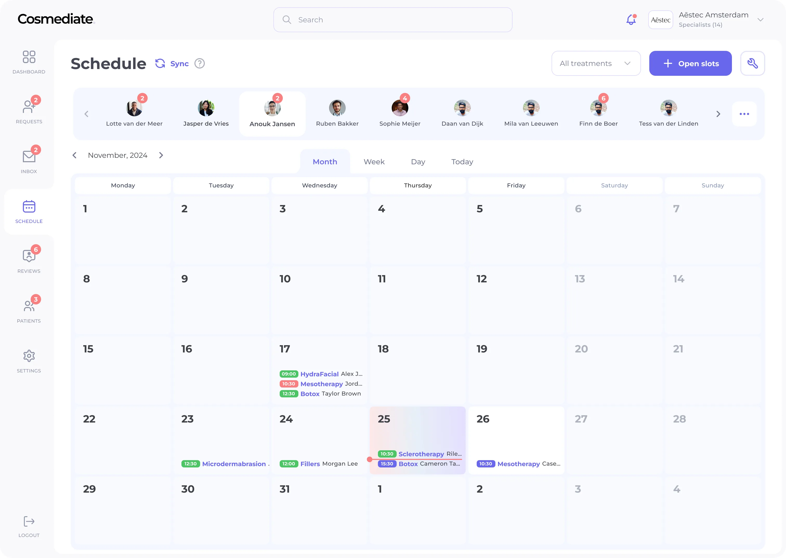
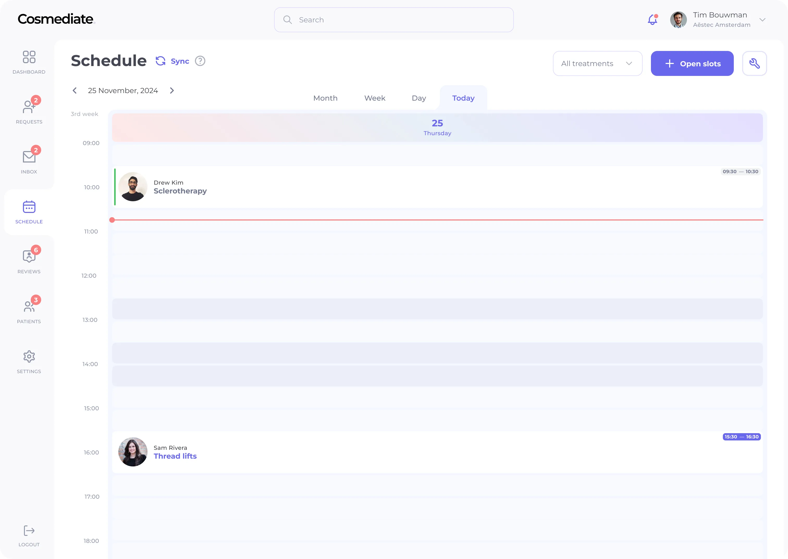
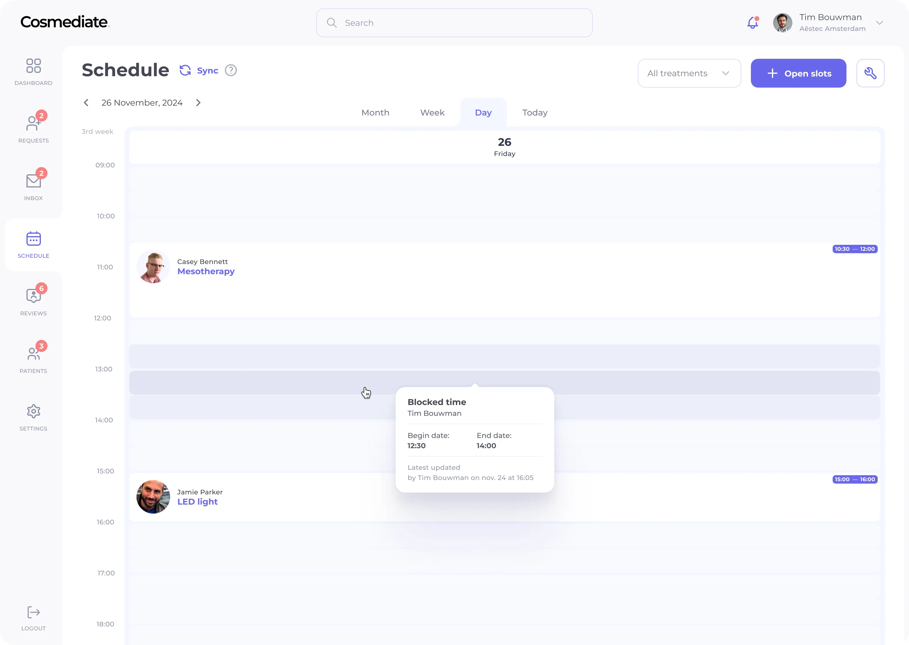
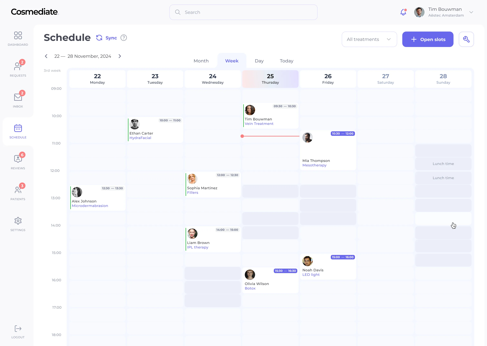
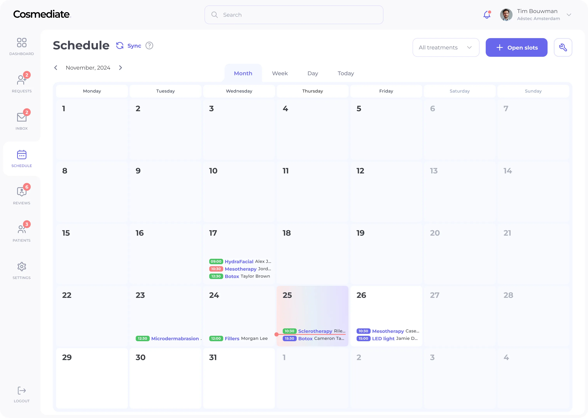
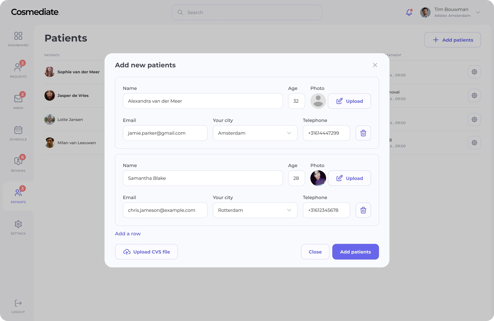
Admin
Адмінка це внутрішній інструмент: має бути зручною і зрозумілою в користуванні.
Погодження клінік, верифікацію сертифікатів, модерацію відгуків і управління користувачами я спроєктував як черги, які адмін проходить зверху вниз.
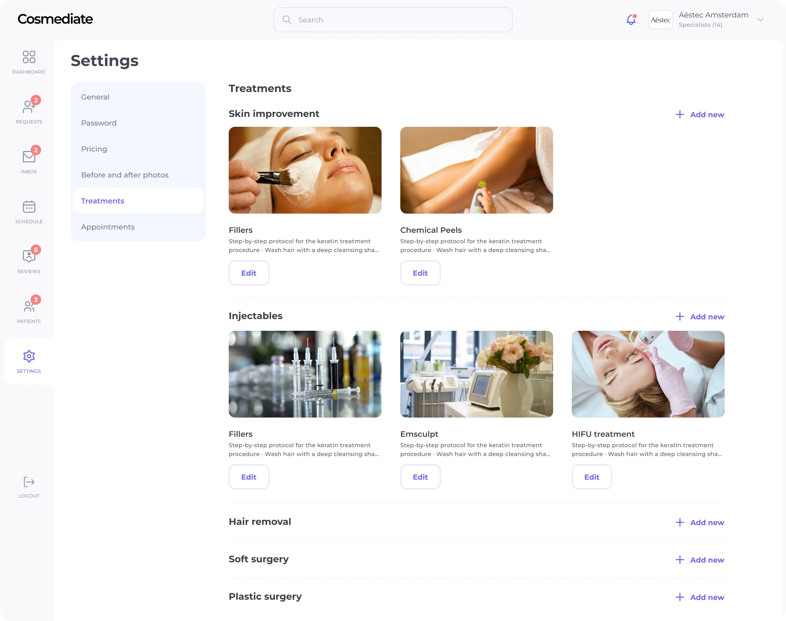
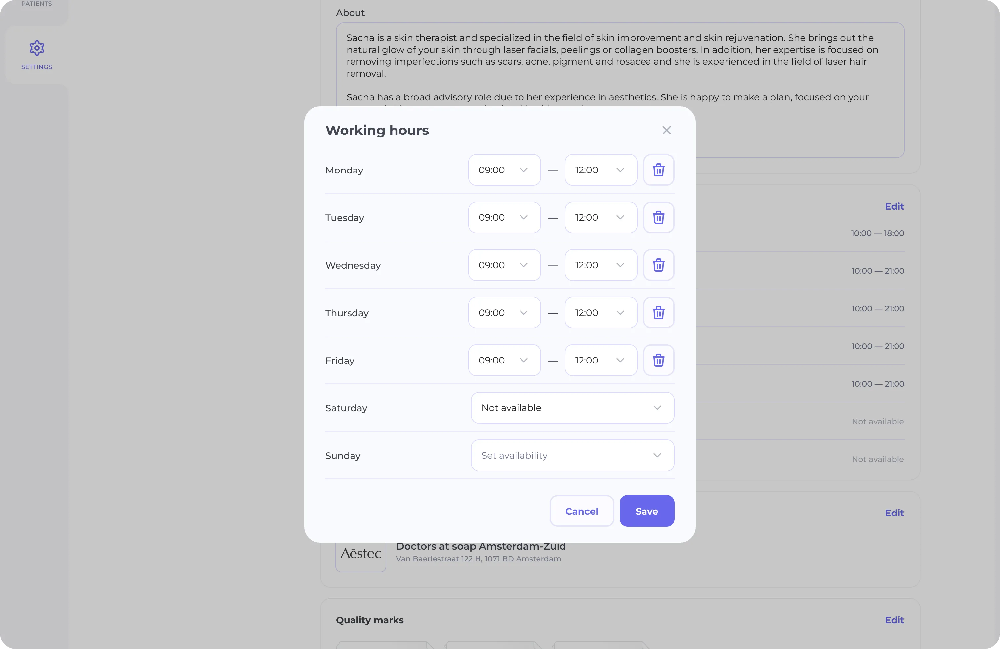
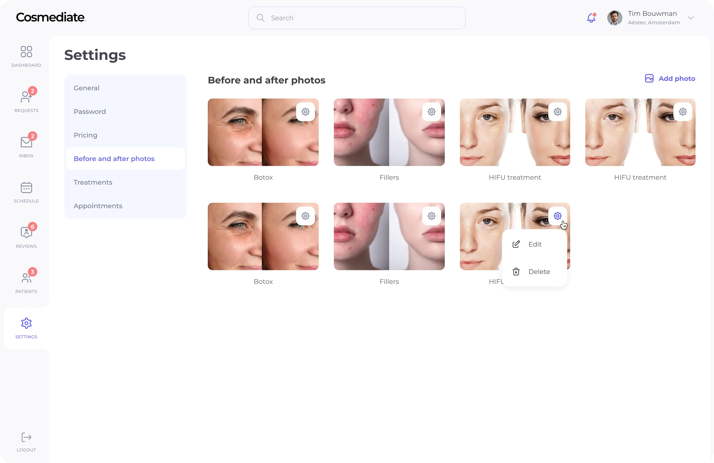
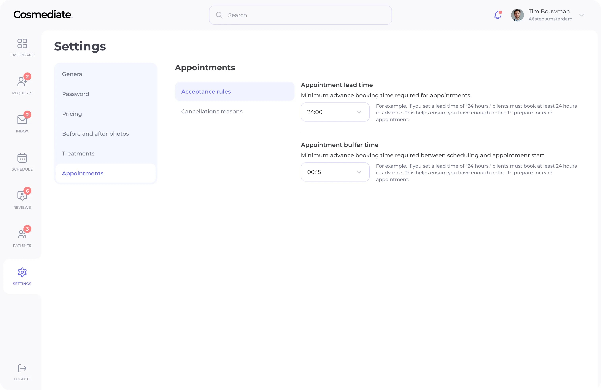
Висновок
Такі продукти складні тим, що кожне рішення пов'язане між собою і перетинається на різних ролях.
Тримати цю зв'язність з нуля, без продуктової команди, означало тримати всю систему в голові на кожному кроці.
Зміна в управлінні доступністю клініки змінює те, що пацієнт бачить у бронюванні. Дизайн-система тримала ці зв'язки вкупі.